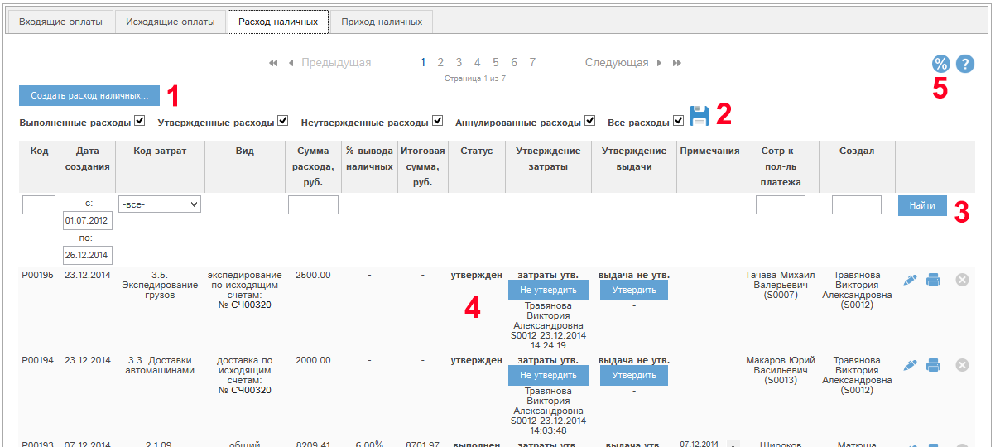
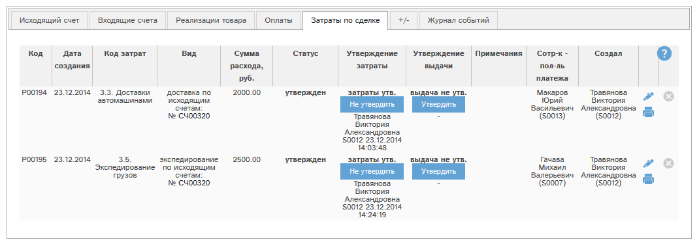
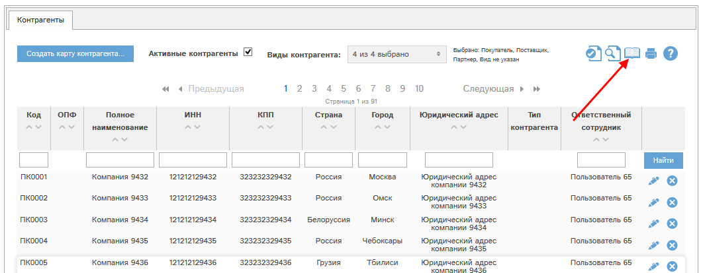
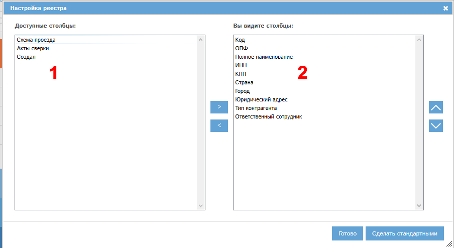

При наличии у Вас соответствующих прав Вам доступен раздел «Оплаты». В этом разделе на вкладке "Расход наличных" показан список доступных Вам расходов наличных.
Кроме того, расходы наличных, привязанные к исходящим счетам (внутренняя доставка, экспедирование, комиссионное вознаграждение), доступны на вкладке «Затраты по сделке» исходящего счета.

Рис. 5.48 Фрагмент окна раздела "Расходы наличных".

Рис. 5.49 Фрагмент вкладки «Затраты по сделке» окна просмотра/редактирования исходящего счета.
Если в списке расходов видна кнопка «Создать расход наличных…» (1), то у Вас есть права на создание расхода наличных.
Фильтр статусов (2) позволяет отфильтровать список расходов наличных по статусам:
- Режим «Выполненные расходы» - только расходы в статусе «выполнен»
- Режим «Утвержденные расходы» - только расходы в статусе «утвержден»
- Режим «Неутвержденные расходы» - только расходы в статусе «не утвержден»
- Режим «Аннулированные расходы» - только расходы в статусе «Аннулирован»
- Режим «Все расходы» - расходы со всеми статусами.
Можно выделить несколько статусов, например: расходы только в статусах выполнен, не выполнен.
Нажатие кнопки позволяет запомнить в программе выбранные вами статусы, и когда вы снова зайдете в раздел «Расходы наличных», то будут показаны документы по сохраненному ранее набору статусов.
Кроме того, в списке можно искать расходы по полям:
- Код
- Дата создания
- Код затрат
- Сумма расхода
- Сотрудник-получатель платежа
- Кто создал
В колонке «Вид» указан вид этого расхода наличных. Расходы наличных бывают следующих видов:
- общий - создается из реестра расходов
- доставка по исходящим счетам - создается из исходящего счета
- экспедирование по исходящим счетам - создается из исходящего счета
- комиссионное вознаграждение - создается из специальных отчетов при наличии специальных возможностей
С помощью кнопки у конкретного расхода можно просмотреть или отредактировать данный расход.
С помощью кнопки можно аннулировать расход.
Если кнопка серого цвета - , то аннулировать данный расход невозможно. Это может быть по нескольким причинам:
- У Вас нет прав на аннулирование расхода;
- расход не в статусе «не утвержден».
При нажатии кнопки будет выведено сообщение со списком причин, по которым невозможно аннулировать этот расход.
При наличии у Вас специальных прав Вам доступна кнопка (5). Эта кнопка позволяет управлять величиной процента вывода наличных. Подробнее - смотрите раздел "Правка и просмотр расхода наличных".
Настройка колонок реестра
Все основные реестры программы могут быть индивидуально сконфигурированы: вы можете указать, какие колонки и в какой последовательности вы желаете видеть. Всегда можно вернуться к стандартному виду реестра. Рассмотрим работу этой функции на примере реестра контрагентов.
Для настройки реестра нажмите кнопку  :
:

Откроется окно настройки. Слева указаны доступные колонки (1), справа - колонки, которые показаны в реестре (2):

Для перемещения столбцов между блоками 1 и 2 выделите требуемые столбцы (можно выделить несколько столбцов, нажав и удерживая ctrl при их выделении), и нажмите кнопку > для перемещения столбцов из доступных в видимые, либо кнопку < для перемещения из видимых в доступные столбцы.
Доступна сортировка видимых столбцов (в блоке 2). Для того, чтобы поднять или опустить столбец или их группу, выделите требуемые столбцы и нажмите для подъема или для спуска столбца.
Для того, чтобы сохранить внесенные изменения, нажмите Готово. Реестр обновится, и будут показаны выбранные вами столбцы в выбранной вами последовательности.
Для того, чтобы восстановить стандартный вид реестра, нажмите кнопку "Сделать стандартными".